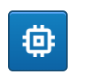

Make selections on the four chart types. For example, for barcharts or scatter charts, you can click and drag the chart to select entries which meet that condition. For PieCharts and Horizontal bar charts, you can click the bars or the pie slices to make selections.
Every time a selection has been made, the rest of the charts will update, reflecting the aggregate selections already made. Also the Run table below will update showing the selections made.
From the Run table entry, you will have up to three buttons on the right: A jupyter notebook, a durations page, and a memory line graph page (currently in development).
There are two options for interfacing with Spot's jupyter notebooks. Clicking on the jupyter icon (left image above) for a run will open a notebook containing the corresponding run in a new webpage (depending on which entry in the table was selected). Alternatively, clicking on the jupyter icon with an "M" at the top of the Run table (right image above) will open a notebook containing all runs.
The notebooks use Hatchet, a Python-based library for analyzing hierarchical performance data, such as profiles that represent calling context trees or call graphs. These notebooks include sample Hatchet analyses that can be used to analyze a single run or multiple runs. Please see the Hatchet Documentation for more example analyses.
Clicking on the durations icon for a run will open the walltimes page.
Clicking on the line graph icon for a run will open the memory line graph page.
Your run data attributes will be shown in four different chart types.
| Chart type | When it's used |
| BarChart | Used for numbers and integers |
| Horizontal BarChart | Used for string values that have more than 12 unique string values |
| PieChart | Used for string values that have less than 12 unique string values |
| ScatterChart | Used for values with two axis. |
| Button | Function |
| Use this to add a new chart to your dashboard. Currently, we support ScatterCharts. | |
| You may show or hide charts using the checkboxes. First, click the checkbox icon at the top right. That will open the checkbox drawer. Then, check or uncheck to show or hide charts. | |
| Input box at the top left. | The input box at the top left allows you to choose a data source directory which should contain cali files to be used as inputs. |
| At the bottom, in the table section which shows run data, you'll see up to three buttons per row. The planet shaped icon will take you to a jupyter notebook. | |
| The durations icon will show you the walltime for a given run. | |
|  | This will open up a new window showing memory usage details. |
| This opens a new jupyter notebook with all your runs combined. |
You can specify the max with max= in the url bar. Max is the maximum number of iterations to make. If you set it to 50, it will ignore all runs after the 50th run. This helps with very large data sets. A typical value for this might be max=18000
You can specify the machine with machine= in the url bar. Machine tells which machine to run it on. You may need to run on a machine that you have access to. Typical values for machine are rzgenie, rzslic, etc.
You can specify the spot file with sf= in the url bar.
sf= is the directory/file sf is short for the data set (short for Spot File)
Typical values for this are:
/usr/gapps/spot/datasets/lulesh2small
/usr/gapps/wf/web/spot/data/lulesh_maximal/
Typical value for command is: /usr/gapps/wf/web/spot/virtenv/bin/python /usr/gapps/wf/web/spot/spot.py
You can specify the command with command= in the url bar. It sends this command to the backend, where it gets run.
You can change the color of the charts with the URL parameter color. Simply set color=1 or any number between 0 and 17. These colors only apply to Vertical Bar charts.
By default, the table columns will be sorted either as a string or as numbers based on the type of the data. Hence "GNU" would be sorted as a string, but 238438 would be sorted as a number. If the string only contains numbers, such as "234234", we'll typecast it to a number and sort it as a number.
This is a URL parameter which lets you specify the last X number of days.
The rest of the documentation is for developers.
Here's the Home
If someone wanted to start playing with this, they could leave all the default parameters and simply pass in sf=/directory/to/your/data. You’ll need to make sure that the data is the same format as this: (/usr/gapps/spot/datasets/lulesh2small) to begin with. Then you can create your own data sets. At that point, you’ll need to start specifying a layout file.
The Data set is an array in this format for each object. This is the data that is returned from the server's getData / Summary call.
0:
Cluster: "rzalastor"
Code Builder: "dzpolia"
Compiler Flags: "-O3"
Compiler Name: "Intel"
Compiler Version: "18.0.1.20171018"
FigureOfMerit: "0.050350"
Hostname: "rzalastor2"
Inclusive Duration: 20335
Iterations: "3700000"
Number of Regions: "6"
Problem Size: "1"
Region Balance: "2"
Region Cost: "1"
cali.caliper.version: "2.0.0-dev"
cali.experiment: "default"
date: "10/11/2018"
drilldown: (3) ["Jupyter", "mpi", "walltime"]
epoch_date: 1539283462
key: "190115-143834_166759_queH4QIMBwAG.cali"
run_id: "id_9268"
There are several special attributes above that do specific things.
This will provide buttons on the right for specific drilldown cases.
Key is a unique identifier that will get passed to the next page. For our use case, it's a cali file, but it can be any identifier you want.
Dev notes: If you wish to coerce a string to be sorted as a number, for instance "234.44", then you can use a "sort_as_number": true in the table definition, in the layout spec.
Most of the attributes above are arbitrary labels of things being plotted. These labels need to match the layout file. For example, "Compiler Name" in the layout spec as an attribute of "dimension" must match the DataSet attribute "Compiler Name", etc.
The Drilldown option has a special function. It will show the buttons listed in the drilldown array. Currently, only 3 drilldowns are supported:
The key is the cali-key and it is used by some of the drilldown options, in order to tell the back end what charts to open up.
There are two conditions which must be met for sub-integer bucketing:
Here is an example of a layout file that shows what you can currently set: (currently: dimension and labels need to match for now, but later we’ll support differences). This layout spec is designed to be extended, such that we can add x-axis titles, etc.
{
"charts": [
{
"dimension": "Compiler Name",
"title": "Compiler names + Compiler Version",
"viz": "PieChart"
},
{
"dimension": "Hostname",
"title": "Hostname",
"viz": "PieChart"
},
{
"dimension": "Cluster",
"title": "Cluster",
"viz": "PieChart"
},
{
"dimension": "Code Builder",
"title": "Code Builder",
"viz": "LeftHorizontalBarChart"
},
{
"dimension": "Compiler Flags",
"title": "Compiler Flags",
"viz": "PieChart"
},
{
"dimension": "Iterations",
"viz": "BarChart"
},
{
"dimension": "FigureOfMerit",
"viz": "BarChart",
"buckets": "['0-5', '6-10', '11-15', '16-20']"
"buckets": "['0-2', '3-4', '5-6', '7-10', '11-200']"
},
{
"dimension": "Number of Regions",
"title": "Number of Regions",
"viz": "BarChart",
"y-label": "Num. of runs for our Figure of merit ch.",
"x-label": "figure x label",
"x-ticks": 8,
"y-ticks": 12
}
],
"table": [
{
"dimension": "date",
"label": "date"
},
{
"dimension": "cali.caliper.version",
"label": "cali.caliper.version"
},
{
"dimension": "Problem Size",
"label": "Problem Size",
"sort_as_number": true
},
{
"dimension": "Region Balance",
"label": "Region Balance"
}
]
}
You can specify labels in any of the BarChart graphs by adding "x-label", or "y-label".
You can specify the number of ticks you would like on the x-axis or the y-axis via "x-ticks", or "y-ticks".